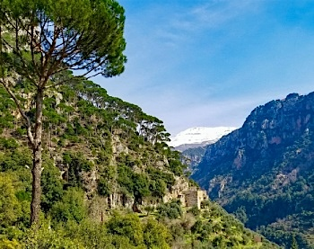

Vandring
Jag trivs som allra bäst ute på tur i naturen. Det här är mina tre favoritvandringar hittills:
| Land | Plats | Beskrivning |
|---|---|---|
| Libanon | Qadishadalen | Magisk dal med en djup historia, där vandringsleder bland gamla kloster omges av vacker natur. |
| USA | Alaska | Utsikten över Alaskas vildmark är helt fantastisk och väl värd den tuffa vandringen uppför Lazy Mountain. |
| Peru | Machu Picchu | Ikonisk bergsled som leder fram till den historiska inkastaden – en plats med rik historia och otroliga vyer. |
Alaska

Qadishadalen
Machu Picchu